사람이 짠 듯 SEO동선 자동화앱
자동화인데
사람이 짠 듯
키워드 · 내부링크 · 외부유입
SEO 동선 자동화앱
리더스 프로
글만 많이 찍어내는
자동화가 아닙니다
사람이 짠 듯
SEO 동선을 자동화합니다
키워드 · 종합글 · 내부링크 · 외부유입
리더스 프로는 LEWORD로 키워드를 찾고, 종합글·하위글·내부링크·외부유입 글까지 연결해 블로그 SEO 동선을 자동화하는 앱입니다.
실제 운영 흐름
키워드에서 공개 글까지
01 LEWORD
중심 키워드
후보를 주제 묶음으로 정리
02 구조화
종합글
전체 맥락을 잡는 허브 글
03 확장
하위글
신청방법, 혜택처럼 깊게 분리
04 연결
내부링크
숨은 마커와 CTA로 왕복 동선
05 보완
외부유입
블로그스팟과 워드프레스 보조 글
결과
공개 발행글
목차, 본문, FAQ까지 검수
01LEWORD 분석
02종합글·하위글 연결
03공개 발행글 검수
문제 공감
키워드는 찾았는데
글의 순서가
막히는 순간
글을 더 많이 쓰기 전에 콘텐츠 동선을 먼저 정리해야 합니다.
01
글 역할이 섞임
종합글과 하위글의 역할이 나뉘지 않으면 글이 쌓여도 구조가 남지 않습니다.
02
링크가 감으로 들어감
내부링크가 흐름 없이 들어가면 방문자가 다음 글로 자연스럽게 이동하기 어렵습니다.
03
플랫폼이 따로 움직임
네이버블로그, 블로그스팟, 워드프레스가 서로 연결되지 않으면 보조 콘텐츠가 분리됩니다.
올인원 패키지 구성
세 개의 앱이 하나의 흐름으로
키워드부터 공개 발행글까지 이어집니다
LEWORD, 네이버 자동화, 블로그스팟/WP 자동화를 따로 설명하지 않고 실제 구매자가 이해하기 쉬운 하나의 운영 흐름으로 보여줍니다.

LEWORD
황금키워드 발굴, 검색량, 문서수, 경쟁비율 확인

네이버 자동화 앱
계정별 대기열, 발행 간격, 1개씩 순차 발행 관리

Blogspot / WordPress
글포스팅, 내부링크, 외부유입, 공개글 구성
01 키워드 발굴
02 글 구조 설계
03 순차 발행
04 내부 연결
05 외부유입 보완
올인원 패키지 실제 화면
LEWORD·네이버자동화·블로그스팟/WP를
각각 최신 화면으로 보여줍니다
단색 설명만으로 끝내지 않고, 실제 앱에서 키워드를 찾고 글을 만들고 공개 글로 이어지는 화면을 한 장씩 보여줍니다.
 LEWORD 키워드 발굴
황금키워드 표, 검색량, 문서수, 경쟁비율을 기준으로 글감의 출발점을 잡습니다.
LEWORD 키워드 발굴
황금키워드 표, 검색량, 문서수, 경쟁비율을 기준으로 글감의 출발점을 잡습니다.
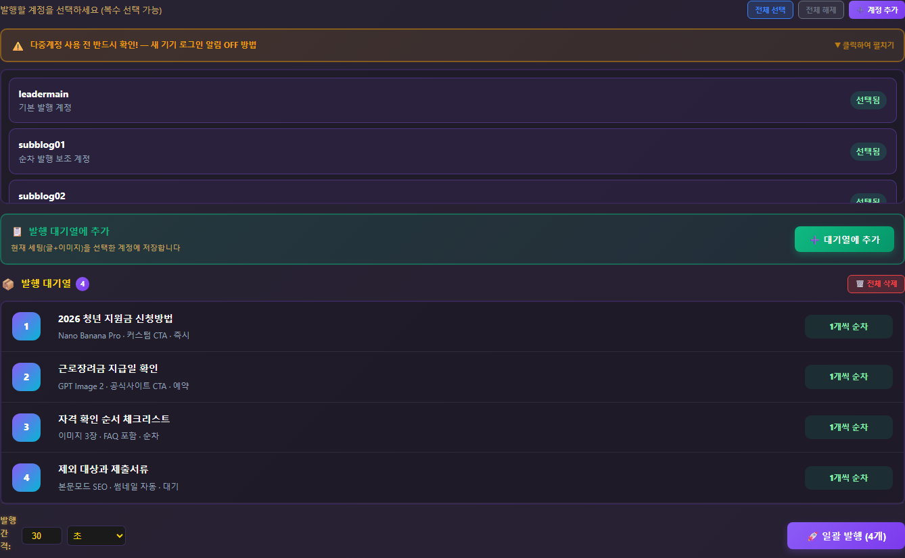
네이버 자동화 앱
계정별 대기열과 발행 간격을 확인하며 1개씩 순차 발행합니다.
 블로그스팟/WP 자동화
상세 설정값을 유지한 채 글포스팅과 외부유입 흐름으로 이어집니다.
블로그스팟/WP 자동화
상세 설정값을 유지한 채 글포스팅과 외부유입 흐름으로 이어집니다.
LEWORD 분석
네이버 발행 관리
Blogspot/WP 외부유입
앱 화면 대량 캡처
설정값이 어떻게 들어가고
어디서 관리되는지 화면으로 보여줍니다
사용자가 실제로 보게 되는 입력, 대기열, 플랫폼 연동, 외부유입, 거미줄 연결, 라이선스 화면을 한 장에 촘촘하게 배치했습니다.
도구별 실제 구동 장면
LEWORD, 네이버 자동화,
블로그스팟/WP 결과물을 한 번에 보여줍니다
앱별 역할이 끊기지 않도록 키워드 발굴, 계정별 순차 발행, 공개 글 화면, 연결된 글 목록까지 실제 캡처 중심으로 구성했습니다.
LEWORD 키워드 발굴검색량과 경쟁비율을 기준으로 출발점 선정
 네이버 자동화 실행계정과 키워드 세팅 후 발행 흐름 확인
계정별 대기열1개씩 순차 발행되는 구조를 강조
네이버 자동화 실행계정과 키워드 세팅 후 발행 흐름 확인
계정별 대기열1개씩 순차 발행되는 구조를 강조
 공개 발행글실제 공개 글 화면에서 결과 확인
공개 발행글실제 공개 글 화면에서 결과 확인
외부유입 글 생성 전용
외부유입 글 생성은
플랫폼·CTA·패턴까지 따로 보여줍니다
발행한 원본 글을 기반으로 네이버/티스토리/워드프레스용 보조 유입글을 만들고, 공식 링크와 돌아가기 CTA까지 함께 구성되는 흐름입니다.
네이버 자동화 모드
스마트 발행 하나만이 아니라
모드·이미지·스케줄·진행률까지 보여줍니다
콘텐츠 모드, 입력 방식, 연속 발행 진행률, 이미지 도구, 이미지 관리, 스케줄 관리, 작업 진행 모달까지 구매자가 실제로 쓰게 될 화면을 분리했습니다.
 풀오토 발행 모드키워드 입력부터 본문, 이미지, CTA, 발행까지 자동 흐름
풀오토 발행 모드키워드 입력부터 본문, 이미지, CTA, 발행까지 자동 흐름
 다중계정 모드여러 계정도 병렬이 아니라 1개씩 순차 발행
다중계정 모드여러 계정도 병렬이 아니라 1개씩 순차 발행
 연속발행 대기열대기 글, 이미지 생성 상태, 예약 순서를 넓게 확인
연속발행 대기열대기 글, 이미지 생성 상태, 예약 순서를 넓게 확인
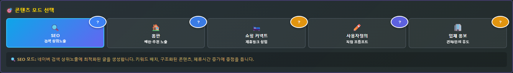
콘텐츠 모드SEO, 홈피드, 제휴, 커스텀, 비즈니스
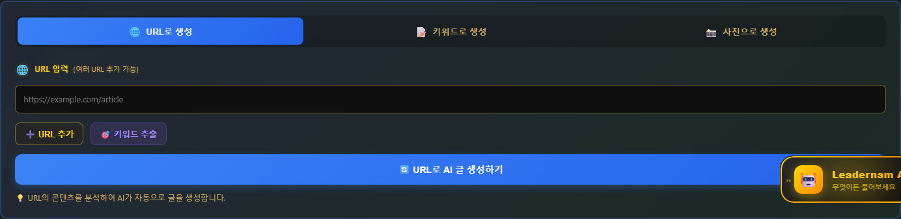
입력 방식URL, 키워드, 사진 기반 글 생성
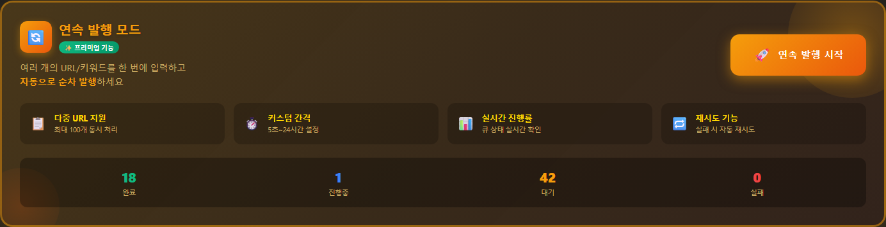
연속 발행완료, 진행, 대기, 실패를 한눈에 확인
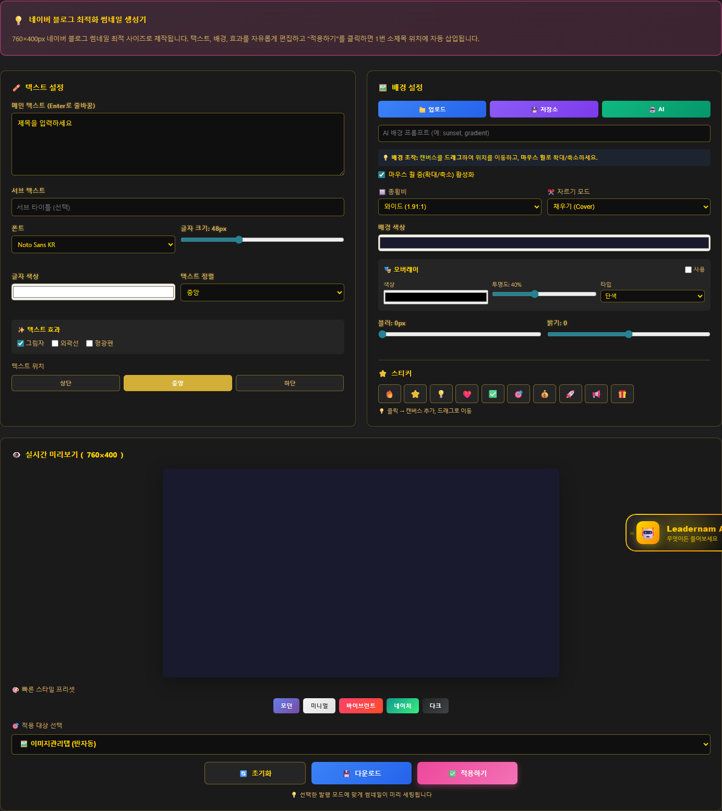
썸네일/배너발행용 이미지와 배너 도구
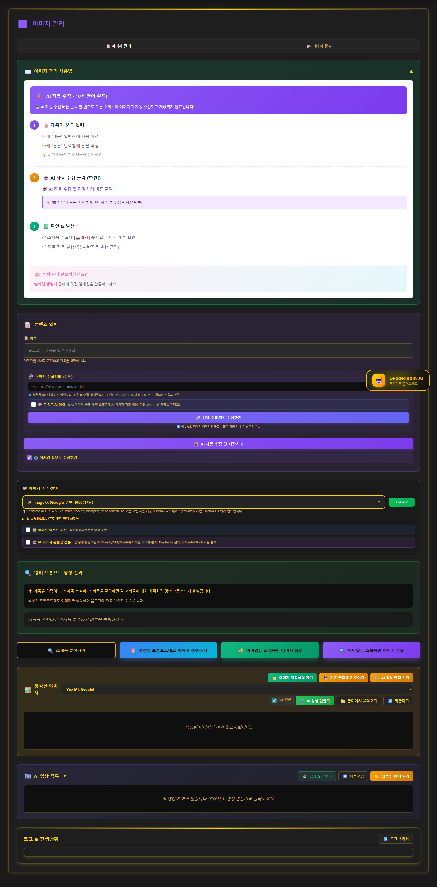
이미지 관리생성 이미지와 업로드 자산 관리
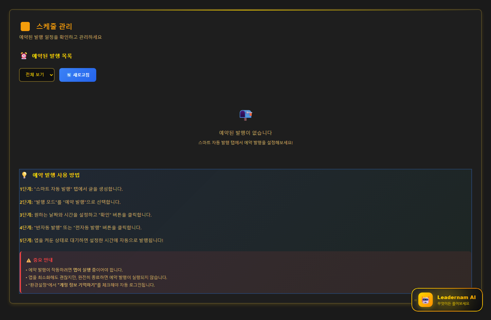
스케줄 관리예약 발행과 일정 흐름 확인
 작업 진행률대기 글과 이미지 생성 미리보기
작업 진행률대기 글과 이미지 생성 미리보기
LEWORD 기능 확장
황금키워드 표 하나가 아니라
필터·드릴다운·트렌드·마인드맵까지 보여줍니다
키워드 발굴 후 바로 글감을 고르는 데 필요한 출처 상태, 세부 키워드, 30일 추세, 글감 미리보기, 마인드맵, 의미분류, 프로 트래픽 헌터를 분리했습니다.
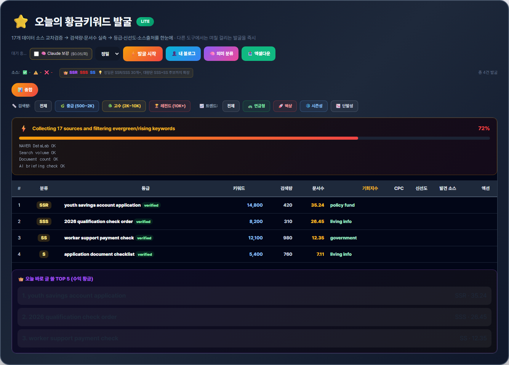
필터/출처 상태검색량, 트렌드, 출처 상태를 함께 확인
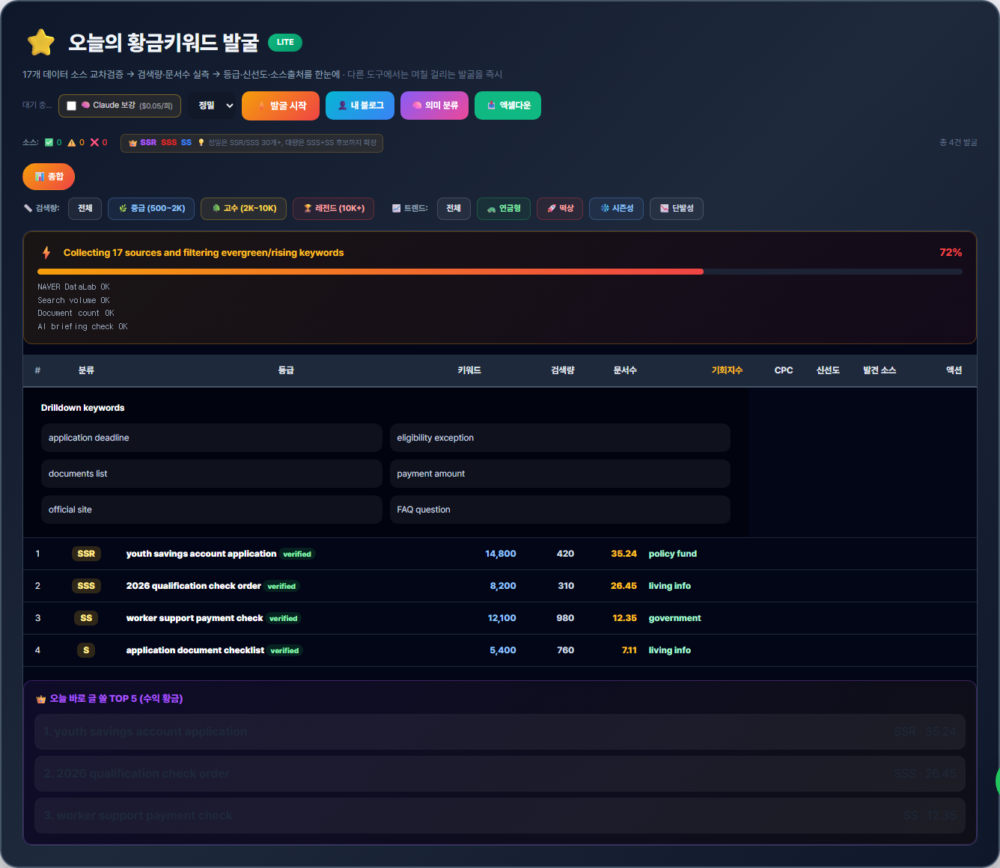
세부 키워드선택 키워드에서 하위 글감 확장
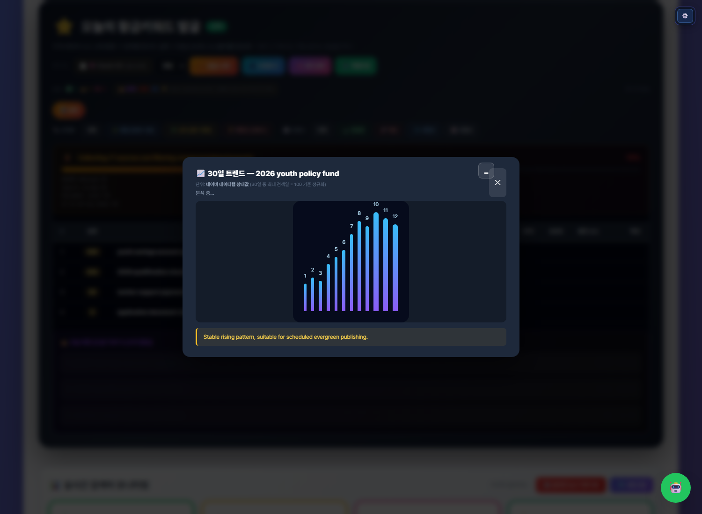
30일 트렌드상승, 안정, 시즌성 여부 판단
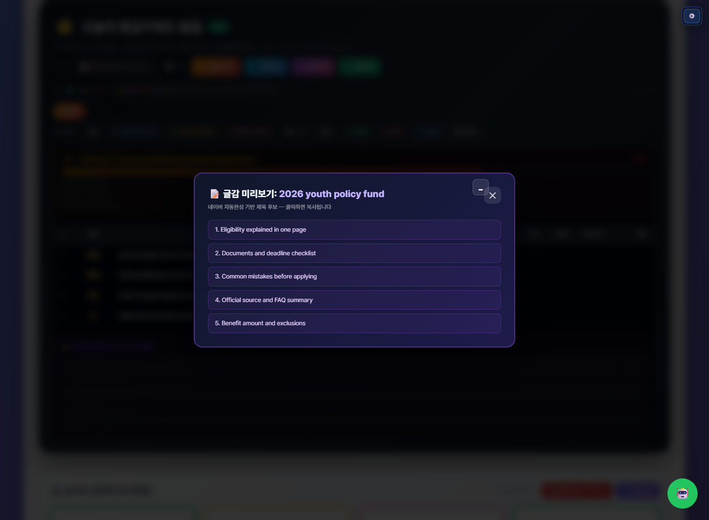
글감 미리보기자동완성 기반 제목 후보 확인
 마인드맵 확장시드에서 롱테일 키워드 묶음 확장
마인드맵 확장시드에서 롱테일 키워드 묶음 확장
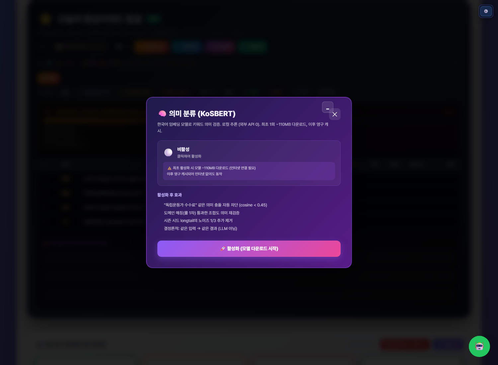
의미 분류어색한 키워드와 넓은 키워드 차단
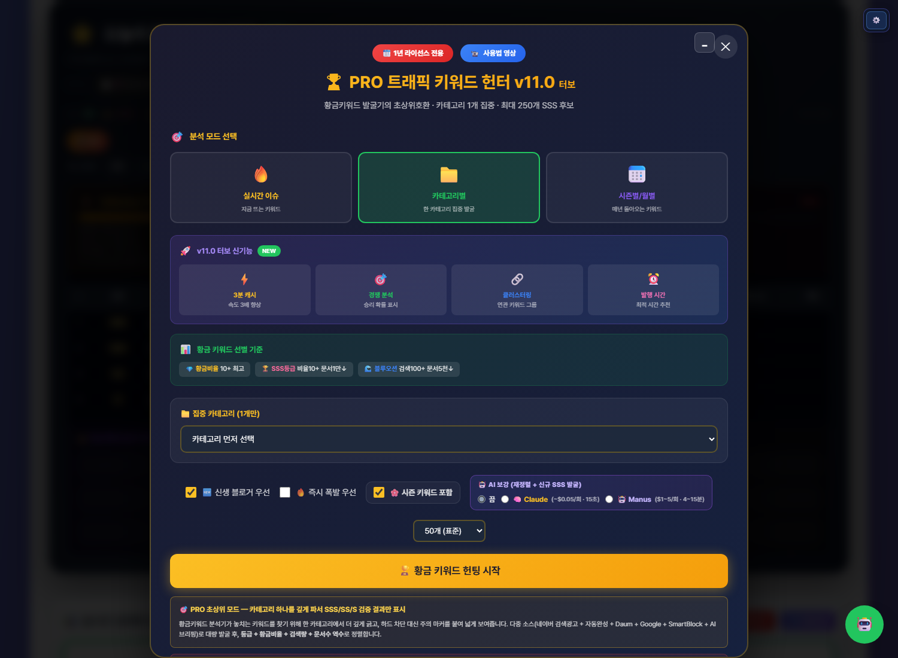
프로 트래픽 헌터실시간, 카테고리, 시즌 키워드 발굴
LEWORD 핵심 모드
실시간 검색어, 황금키워드 분석,
트래픽 키워드 헌터를 따로 보여줍니다
단순 키워드 표가 아니라 지금 뜨는 키워드, 글감 우선순위, 트래픽 후보를 분리해서 확인하는 흐름입니다.
 실시간 검색어지금 뜨는 후보와 발행 적합도를 빠르게 확인
실시간 검색어지금 뜨는 후보와 발행 적합도를 빠르게 확인
 황금키워드 분석검색량, 문서수, 경쟁비율로 글감 우선순위 판단
황금키워드 분석검색량, 문서수, 경쟁비율로 글감 우선순위 판단
 트래픽 키워드 헌터실시간, 카테고리, 시즌 키워드를 분리 발굴
트래픽 키워드 헌터실시간, 카테고리, 시즌 키워드를 분리 발굴
실제 앱 화면
키워드를 넣고
설정값 그대로 대기열로 보냅니다
연속 발행은 키워드만 쌓는 화면이 아니라, 썸네일·CTA·이미지 엔진·본문 모드 설정까지 함께 이어져야 편합니다.
키워드와 상세 설정 입력
원하는 키워드, 본문 모드, 이미지 엔진, CTA 설정을 한 화면에서 정리합니다.
 대기열에서 순차 발행 관리
여러 키워드를 넣어도 좁은 칸 안에서 답답하게 보는 것이 아니라 큼직하게 관리하는 흐름입니다.
대기열에서 순차 발행 관리
여러 키워드를 넣어도 좁은 칸 안에서 답답하게 보는 것이 아니라 큼직하게 관리하는 흐름입니다.
키워드 입력
설정값 연동
1개씩 순차 처리
앱 연동과 운영 화면
블로그스팟·워드프레스까지
실제 연결 흐름을 보여줍니다
초보자도 어디에서 막혔는지 알 수 있도록 연동, 로그인, 외부유입 생성 화면을 상세페이지 중간에 그대로 배치했습니다.
 플랫폼 연동
블로그스팟과 워드프레스 계정 정보를 앱에서 확인합니다.
플랫폼 연동
블로그스팟과 워드프레스 계정 정보를 앱에서 확인합니다.
 외부유입 글 생성
원본 글을 기반으로 보조 유입 글을 만드는 화면입니다.
라이선스 등록
사용자는 로그인 후 라이선스를 등록하고 앱을 실행합니다.
외부유입 글 생성
원본 글을 기반으로 보조 유입 글을 만드는 화면입니다.
라이선스 등록
사용자는 로그인 후 라이선스를 등록하고 앱을 실행합니다.
거미줄글포스팅 화면
앱에서 종합글을 구성하고
공개 글에서 연결을 확인합니다
종합글은 기존 글을 선택해 묶고, 공개 발행글에서는 본문과 관련 글 카드로 실제 이동 동선을 확인합니다.
 앱에서 거미줄 구조 구성
기존 글을 선택해 종합글과 내부 연결 흐름을 구성합니다.
앱에서 거미줄 구조 구성
기존 글을 선택해 종합글과 내부 연결 흐름을 구성합니다.
 공개 발행글 본문 확인
이미지, 본문, 강조 문구가 실제 글에서 어떻게 보이는지 확인합니다.
공개 발행글 본문 확인
이미지, 본문, 강조 문구가 실제 글에서 어떻게 보이는지 확인합니다.
글 선택
종합글 구성
공개 글 확인
실제 연결 예시
종합글에서
관련 글로 이어지는 구조
목록, 본문 CTA, 주제별 가이드 카드가 서로 이어져 방문자가 다음 글로 이동할 수 있게 구성됩니다.
 관련 글 목록에서 같은 주제의 하위 글이 이어집니다.
관련 글 목록에서 같은 주제의 하위 글이 이어집니다.
 본문 중간 CTA로 핵심 상세 글에 다시 진입합니다.
본문 중간 CTA로 핵심 상세 글에 다시 진입합니다.
 종합글 하단에서 주제별 상세 가이드로 연결됩니다.
종합글 하단에서 주제별 상세 가이드로 연결됩니다.
공개 발행글 품질
본문 중간과 FAQ까지
깔끔한 구간을 크게 보여줍니다
구매자가 앱 결과물을 상상하지 않도록 실제 공개 글의 본문, 강조 문장, FAQ 구간을 넓게 보여주는 섹션입니다.
본문 이미지와 설명, 강조 문구가 실제 글 안에서 정리된 모습
 FAQ 시작 구간과 정보성 본문 마무리
FAQ 시작 구간과 정보성 본문 마무리
 사용자가 실제로 확인하는 FAQ와 안내 문구
사용자가 실제로 확인하는 FAQ와 안내 문구
리더스 프로 정의
키워드를 글감이 아니라
SEO 동선으로 확장합니다
리더스 프로는 LEWORD로 키워드를 찾고, 네이버블로그·블로그스팟·워드프레스 자동화를 연결해 종합글·하위글·내부링크·외부유입 글까지 하나의 콘텐츠 흐름으로 구성하는 앱입니다.
LEWORD키워드 출발점
네이버블로그콘텐츠 운영 보조
Blogspot / WP외부유입 보조 글
5-LINK 시스템
키워드가
SEO 동선이 되는 과정
KeywordLEWORD로 키워드 후보 발굴
Role글 역할 분배
Pillar종합글 구조 설계
Link내부링크 연결
Traffic외부유입 글 구성
핵심은 기능을 따로 쓰는 것이 아니라, 키워드에서 종합글과 외부유입 글까지 하나의 콘텐츠 동선으로 연결하는 것입니다.
현재 제공 툴 3개
3개 툴이 하나의
SEO 자동화 흐름으로
연결됩니다
사용 예시 시나리오
예시 키워드:
다이어트 식단
중심 키워드
다이어트 식단
목표
종합글 → 하위글 → 내부링크 → 외부유입 글
4외부유입 글: 보조 콘텐츠로 메인 글 흐름 보완
Before / After
글 개수보다
글이 이어지는 구조
Before
- 키워드는 찾았지만 어떤 글을 쓸지 막힘
- 글을 따로따로 발행함
- 내부링크를 감으로 넣음
- 플랫폼별 콘텐츠가 따로 움직임
After
- 키워드별 글 역할이 나뉨
- 종합글과 하위글을 연결해 운영함
- 내부링크 흐름을 기준으로 글을 연결함
- 여러 블로그 채널을 하나의 동선으로 바라봄
패키지 / 가격
기능 차등이 아니라
이용 기간 차등형
1년 이용권
400,000원
현재 제공 툴 3개 전체 사용. 블로그 SEO 유입 동선을 1년 동안 운영해보고 싶은 분께 적합합니다.
영구 이용권
1,500,000원
리더스 프로를 장기 운영 도구로 활용하려는 분을 위한 구성입니다.
두 이용권 모두 LEWORD 키워드툴, 네이버블로그 자동화, 블로그스팟/워드프레스 자동화 3개 툴 전체 사용이 포함됩니다.
구매 전 확인사항
운영 환경과 지원 범위를
먼저 확인해주세요
사용 가능 OSWindows 기준입니다. Mac은 테스트 후 별도 안내합니다.
설치 가능 PC 수설치 PC 수 제한은 없습니다.
라이선스 방식아이디/비밀번호 입력 후 라이선스코드를 등록합니다.
중복 로그인동일 아이디/비밀번호 중복 로그인은 불가합니다.
계정 수별도 제한은 없지만 안정 운영을 위해 최대 5개까지 권장합니다.
글 생성량별도 제한은 없지만 플랫폼 정책과 콘텐츠 품질을 고려한 정상 운영 범위를 권장합니다.
업데이트구매 후 1년 무상 제공, 이후 업데이트 유지는 월 30,000원 기준입니다.
문의 지원기본 사용 문의는 구매 후 15일간 지원합니다.
핵심 FAQ
구매 전 자주 묻는 질문
어떤 앱인가요?키워드에서 종합글·하위글·내부링크·외부유입 글까지 연결해 콘텐츠 운영 흐름을 구조화하는 앱입니다.
어떤 툴을 사용할 수 있나요?LEWORD 키워드툴, 네이버블로그 자동화, 블로그스팟/워드프레스 자동화 3개 툴을 사용할 수 있습니다.
상위노출이나 수익을 보장하나요?아닙니다. 검색 결과, 유입, 수익은 블로그 상태, 콘텐츠 품질, 키워드 경쟁도, 운영 방식에 따라 달라질 수 있습니다.
예정 기능도 포함되나요?현재 구매 범위에는 상세페이지에 명시된 제공 기능만 포함됩니다.
글 생성량 제한이 있나요?별도 제한은 없지만 정상적인 운영 범위에서 사용하는 것을 권장합니다.
구매 전 무엇을 보내야 하나요?PC 환경, 운영 플랫폼, 계정 수, 필요한 기능 범위를 보내주시면 확인 후 안내드립니다.
마지막 문의 유도
내 블로그에 맞는
SEO 자동화 동선이 필요하다면
운영 중인 플랫폼, 사용하려는 계정 수, 필요한 자동화 범위를 보내주세요.
현재 상황에 맞는 이용권과 사용 방향을 안내드립니다.